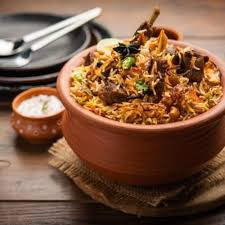

Ingredients
For the Mutton:
- 500g mutton (bone-in)
- 1 cup yogurt
- 1 tablespoon ginger-garlic paste
- 1 teaspoon turmeric powder
- 1 teaspoon red chili powder
- Salt to taste
For the Rice:
- 2 cups basmati rice (soaked for 30 minutes)
- 4 cups water
- 2 bay leaves
- 4 green cardamoms
- 2 cloves
- 1 cinnamon stick
For the Biryani:
- 2 onions (sliced and fried till golden brown)
- 1 teaspoon biryani masala
- 1/2 teaspoon saffron (soaked in warm milk)
- 1/4 cup chopped coriander & mint leaves
- 2 tablespoons ghee
Instructions
- Marinate mutton with yogurt, ginger-garlic paste, turmeric, chili powder, and salt. Rest for 2 hours.
- In a deep pot, boil water with bay leaves, cardamoms, cloves, and cinnamon. Add rice and cook until 80% done. Drain and keep aside.
- Heat ghee in a pan, add marinated mutton, and cook for 30-40 minutes until tender.
- In a large pot, layer half of the cooked rice, followed by cooked mutton, fried onions, biryani masala, coriander, mint, and saffron milk.
- Add the remaining rice on top and cover the pot with a lid.
- Cook on low heat (dum) for 15-20 minutes.
- Fluff up and serve hot with raita.